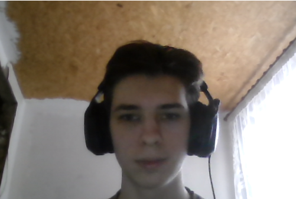

ЗВІТ З ЛАБОРАТОРНИХ РОБІТ
З дисципліни: Інтернет-технології та проектування веб-застосувань
Студент групи: ІС-32
Стрельнік Максим Сергійович

Лабораторна робота №1
Лабораторна робота №2
Лабораторна робота №3
Лабораторна робота №4
Лабораторна робота №5
Лабораторна робота №6
Лабораторна робота №7
Лабораторна робота №8
Лабораторна робота №9